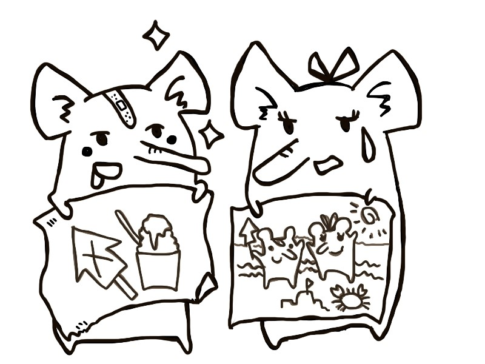
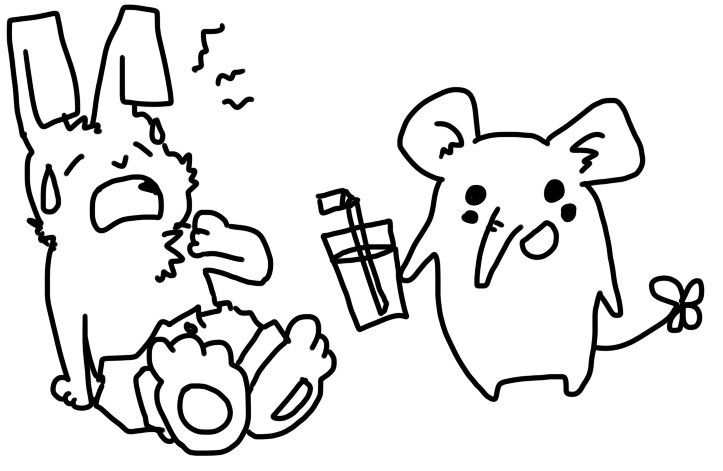

| NLPでコミュニケーションを楽しく | |
| Unknown | |
| Blossom publication (2016) | |
私たちの抱えている大きな悩みの一つは、「コミュニケーションがうまく取れない」ことだと言います。
たくさんの側面があるのですが、
例えば・・・
『相手の立場に立って考えてみたらよい』とか、『気配りをしたら良い』とか、言います。が、しかし、そうは簡単にいかないよねえ...というところでしょう。
なぜなら、私たちはそれなりに、『相手の立場を考え、気を配っているから』です。
ＮＬＰの前提の１つに
「コミュニケーションの意味は、受け取る相手の反応にある」があります。
あなたが、いくら『相手の立場を考え、気を配っているから』と言っても、コミュニケーションの難しさは、あなたが伝えたことが確実に伝わるわけではないこと、そして、伝えたいことがなかなか伝えきれないことにあるのでしょう。
しかも、あなたは、それが相手に伝わってないことを瞬時に察知することができてしまう能力があり、だからこそ落胆も大きいのかもしれません。
この前提は・・・、
相手の反応が自分の意図するところと違っていたら、そこでめげずに、何度でも、言い直したり、付け加えたりして、「あっ、ちゃんと伝わった！」と自分が感じられる相手の反応を受け取るまでチャレンジしてみましょうと言っています。
あなたはたった一度のすれ違いで、無駄な落ち込みをせず、あなたの欲しい相手の反応を手に入れるようにトライする事が大事です。

よーく思い出してみましょう。
もあなたが誰かに質問する時は、その答えを想定していませんか？
また、あなたが誰かの質問に答える時、相手の想定内に答えを返しているのではないでしょうか？
Ａ「ねえ、この部屋、なんか暑くない？（窓を開けて欲しいな）」
Ｂ「うん、そうだね」
Ａ「締め切っていたから換気もしたいね？（窓をあけたいな）」
Ｂ「そうだね、新鮮な風でも入れようか？」
Ａ「（そうでしょう！！）じゃあ、少し窓をあけようか？」
Ｂ「賛成。じゃあ、私が窓をあけるね」
Ａ「（ああ、よかった！伝わったぁ）」
自分の想定した反応を相手がしてくれる場合もあります。
良かった！
ですが、
Ａ「ねえ、この部屋、なんか暑くない？（窓を開けて欲しいな）」
Ｂ「えっ、そう？」
Ａ「締め切っていたから換気もしたいね？（窓をあけたいな）」
Ｂ「べつに、いんじゃない？」
Ａ「少し窓をあけようか？」
Ｂ「いや、いいよ、このままで！」
Ａ「（ガーン...）」
こんなふうにすれ違いにちょっと落ち込むこともあります。
こんな時は、落ち込む前に、自分の気持ち、確固の中の気持ちも言葉にして伝えなおしてみるといいかもしれません。
ＮＬＰの前提に
「地図は領土ではない」があります。
私たちは、同じものを見ていても、自分に都合の良いところや興味を持ったところは一生懸命取り入れますが、あまり気をそそられないところは無視してしまう傾向があります。
自分が現実と思っている地図と、現実は違う。
つまり、人が自分の中に描く地図は、同じものを共有したとしても個々に違っている、という相互のものの記憶のしまい方の違いを「地図は領土ではない」と表しています。
例えば、
Ａ「○○っていう映画、良かったねえ！感動しちゃった！」
Ｂ「うん、私も感動しちゃった！よかったよねぇ！」
Ａ「とっても、素晴らしいストーリーで涙が止まらなかったよ！」
Ｂ「あのロケ地のノスタルジックな雰囲気がいいねえ。音楽も郷愁をそそるよね！」
Ａ「いや、でも、ストーリーでしょ、感動するのは？！」
Ｂ「そうかな、あの撮影の手法に技術の素晴らしさがあって、私はそちらに興味を感動を感じるけど！」
Ａ「そーかなぁ・・・」
Ｂ「そーだよぉ・・・」
同じ映画（地図）に感動していることは一緒でも、実際に見ていた視点（領土）が異なる場合です。
そう、
コミュニケーションは大変で難しい！と考えるのではなく、コミュニケーションはすれ違いがあることが当たり前なのだとわかると、大分気が楽になるのかもしれません。
すれ違いを見つけて、寄り添わせていく事、寄り添っていくことが重要なのです。
ＮＬＰでは【キャリブレーション】と言います。
相手の気持ちに寄り添うには何ができるでしょう。
人と会話をするとき、私たちは相づちを入れます。もちろん、その会話の内容に見合った相づちです。
「へえ、そうなんですね」「あら、すごいですね」というぐあいに。
この相づちを、相手の会話内容ばかりではなく、相手の言語非言語すべてに対して関心を向けて、やってみましょう。
ということは...
相手の表情、目や口元の動き、手や足の位置と動き、体の向きや傾き、その動きの頻度や範囲。
相手の声の大きさやテンポ、トーン、使う言葉や口調、そして呼吸や心臓の鼓動にまで、相づちをするつもりで相手と向き合ってみてください。
ほら、なんとなく、目の前にいる人の気持ちが伝わってきます。
【キャリブレーション】とは、人がいろいろな記憶や心に状態を経験している時に表れる表情の、微妙な違いを見分け非言語のサインを読む、という意味です。
しっかりキャリブレーションができたら、私たちも相手と同じように言語非言語をマッチさせてみます。
そうすると、相手への理解が深まってくるのです
カウンセリングやコーチングでは、『ラポール』と言って、互いの信頼関係が重要なベースになります。
ＮＬＰでは、相手を尊重し、相手に近づこうとする姿勢を言います。
これはもちろん、すべての人間関係に不可欠なものですね。
ＮＬＰでは、「ラポール」を取るとき、キャリブレーションをベースに、まず【ペーシング】というペース合わせから始めてみます。
ペーシングは真似（ミラーリング）しながら、相手のペースに合わせて行く、マッチングさせていくことです。
相手の表情、姿勢、動作、呼吸、声、会話、感情、言葉など、相手のペースに合わせていくことは、相手との共通点を自然に探りながら、無意識の安心感を高め、そして会話やコミュニケーションの質を高めていくことです。そう、相手のことがよくわかってくるのです。
私たちは小さな子どもと話をする時、しゃがんで目線を合わせて話をします。『こんな目線で世界を見てるんだ～』なんて、思ったことがあるでしょう。
そう、ペーシングは親近感を生み、相手の立場や世界観が理解しやすくなります。
そうして、ラポールが寄り深くなっていくんですね。
人がモノを考えるときは脳の細胞にアクセスします。
例えば視覚情報・見たことであれば後頭葉に、聴覚・知覚・記憶をたどる時は側頭葉に、身体の感覚情報であれば頭頂葉にアクセスします。
そして、前頭葉は主に計画や意思決定、目的行動に関係しています。
人が何かを考えている間は、ほんの少しですが、脳に直接つながっている組織である目が脳の中のアクセスの状況を示しています。
一般に、視線が上向きの時は視覚システムにアクセスしている傾向にあります。思い出している時は左上、イメージする時は右上に向く事が多いです。
聴覚システムとアクセスするとき視線は左右に動きがち。記憶している音を思い出す時は右側水平に動く傾向がありますが、あなたの思い出のあの歌はどこから聞えそうでしょう？
そして触運動覚システムにアクセスしている時視線は下向きになりがち。感情に浸っている時は右下に向く傾向があり、内的な対話をしている時は左下に向きがちです。
「You cannot see the wood for the trees.」
ついつい私たちは目の前の現実・問題・課題に目と気を取られてしまいます。
もちろん、前進するためにはそれはとても重要なことではあります。
山の中で道に迷うと、人は新たな出口に向かっているつもりでも、結局同じところをぐるぐると回っているだけ、という「リングワンデリング」があるといいます。
人が、何か問題にぶつかると、どうしても"ソコ"が気になり、目をあげられなくなることがあるのと、似ています。
「木を見て森を見ず」「木を見て林を忘れる」とよく言います。
物事の一部分や細部にとらわれて、全体を見失うことのたとえで、一本一本の木に注意を奪われて、森全体を見ようとしないことからの故事です。
また、
逆に小さいことや些細なことに気を取られると全体を見失うことを「森を見て木を見ず」と言います。
森に入って一本一本の木に、気を取られると森全体の姿は 分からないものです
そう偏らないように、ＮＬＰでは『チャンキング』という概念があります。
一つの塊をチャンクと言います。
チャンクを、部分部分に掘り下げて具体的にしたり、明確にして行くことをチャンクダウン。
そのチャンクのさらなる意味や目的という全体を見て行くことをチャンクアップといいます。
そして、そのチャンクの他の捉え方・類似した例をあげてみることを水平チャンクといいます。
情報をグループ分けし、適当な大きさにして考えて行くことを【チャンキング】といいます。
ピンクのゾウさんピンキーの友達、うさぎのデニムがハアハア言っています。
「ピンキー、飲み物、ある？」
さて、ここで、チャンキングで考えてみます。
「デニム、どんな飲み物がいいの？」
これはチャンクダウンです。
何？いつ？どこで？具体的には？などと訊くと、詳細情報が入手できます。
そこで「飲み物なら、ジュースもミルクもスープもあるよ」これが水平チャンク、同類の他のモノの提示です。

そして、「飲み物はどうして欲しいの？」
これはゴールを訊くので、チャンクアップ。
それが実現したらどうなるの？と聞いてもＯＫです。
ピンキーはこう言うでしょう
「はい、冷たいニンジンジュースだよ！喉を潤してね！」
いかがでしょう
ピンキーはこう言うでしょう
「はい、冷たいニンジンジュースだよ！喉を潤してね！」
いかがでしょう
米国大統領のオバマ氏の演説の評価は高く、「ＮＬＰを使った戦略的話術」といわれることもあります。
あなたもＮＬＰを使って、人に伝わる・人を動かす会話やスピーチをしましょう。
最も重要かつ簡単なことは、『明確な目的を持つ』ことでしょう。
こんな風にサクッと話す目的をはっきりさせて、スピーチしてみます。
１．何に関心を持っている人に話しをするのか
２．心から伝えたいメッセージは何で、どんなことを話すかのか
３．聴き手をどのような状態にするためのスピーチなのか
４．自分のスピーチがうまく伝わった時の具体的なイメージはどうか
５．自分のスピーチが成功したと分かる証拠を見つけて、イメージの中で体験してみる
６．スピーチを成功させるための役立つ資源（過去に於いて身に付けた自信や技術・能力、他者からの支援や指導）はなにか
７．スピーチや会話を成功させることは、自分の人生にとってどのような良い意味があるのだろうか
相づち一つで、傾聴力が変わります。
ＮＬＰには、アクティブ・リスニングにつながる相づちのテクニックがあります。
言葉のミラーリングといわれる【バックトラック】です。
バックトラックは、会話の中で相手の言葉や話のキーワードを、そのままオウム返しに相手に伝え返します。
そして、その言葉の背景になっている感情もバックトラックします。
話しの整理が必要な時は要約・要点をバックトラックするのも効果的です。
バックトラックされると、人は相手に理解されたという気持ちになり安心感を覚えます。そして本当は何を言いたいのか、どう考えているのかが整理され、問題解決の糸口が見つかることもあるのです。
相手の話をよく聞いて、寄り添いながらその話や言葉に反応すると、相手の思いや伝えたいことまで引き出すことができるのです。
人間関係の基本は「聞く」ことにあります。
聞く力のある人は特別な人間関係を築くことができ、また、聞く力は教育力であり、創造力であり、自分の内面を高める力であり、その力のある人は幸福に出会えるといいます。
人は、自分の生きている世界を五感で体験しています。
喜び、愉しさ、理解や思考の鋭さ、人生に生きる価値を与えてくれる全てのことが、五感という感覚を通してやってくるのです。
見る、聞く、感じる、においをかぐ、味わうという体験を通して、人は物事を体系づけ、記憶し、意味付けをします。
ＮＬＰではそれを【表象システム】といいます。
この表象システム、視覚・聴覚・身体感覚・臭覚・味覚という5本のアンテナは全ての人に等しくあるのですが、人によってアンテナのキャッチの力が違います。
得意なアンテナ（感覚）がニョキッと高くなっていることが多いのです。
ＮＬＰでは視覚をＶ，聴覚をＡ，臭覚・味覚は身体感覚に含めＫと表します。
これを【優位感覚】といい、人によって傾向が異なります。
あなたが子犬を飼うとしたら、その理由はなんでしょう？
目の前に仔犬がいます。
・仔犬の愛らしさに魅かれ、飼いたいと考える人【Ｖ】
・仔犬の犬種や血統で飼おうと考える人
・または鳴き声が気になるので飼わないと思う人【Ａ】
・仔犬抱き心地が忘れられなくて飼うことを決める人【Ｋ】
というようにＶＡＫのどの傾向が強いかによって、認識や判断が違ってくる場合があるいのです。
あなたの優位感覚は？
『海にいる自分』をイメージしてみましょう。
人が自分の体験をどのアンテナ（優位感覚）を使って記憶として蓄積しているかに気づくことができます。
イメージしたもので、傾向が分かります。
青い空・水平線・青い海・白い波・遠くの小島・海に浮かぶ船などをイメージした人は視覚優位・Ｖの傾向が強い人。
カモメなどの海鳥の鳴き声・波の音・船の汽笛などをイメージした人は聴覚優位・Ａの傾向が強い人。
浜辺の砂の感触を手足に感じること・海の風をほほに感じること・潮の匂いなどをイメージした人は身体感覚優位・Ｋの傾向が強い人。
話しがなんとなく通じないなあ...などと思ってしまう相手は、この優位感覚の違いによることがあります。
では、話しを十分に伝えるためには、敢えて、見えるように、聞えるように、感じ取れるように、感じるように話してみると良いのです。
言葉は言霊です。不思議な力があり、そしてその力通りの事象がもたらされると信じられていたこともあるほどです。
いかがでしょう、NLPについて、少しわかって頂けましたか？
「私はNLPが大好き！」とあなたにも、実感してほしいと思っています。
ＮＬＰはＫ+を大事にします。
いつも、ワクワク、自由に、そして一致感のある気分で過ごしましょう！
あなたの毎日は、そして、あなたの人生は、あなたが作っていけるのです！
著 者 美桜
イラスト 黒川かおり